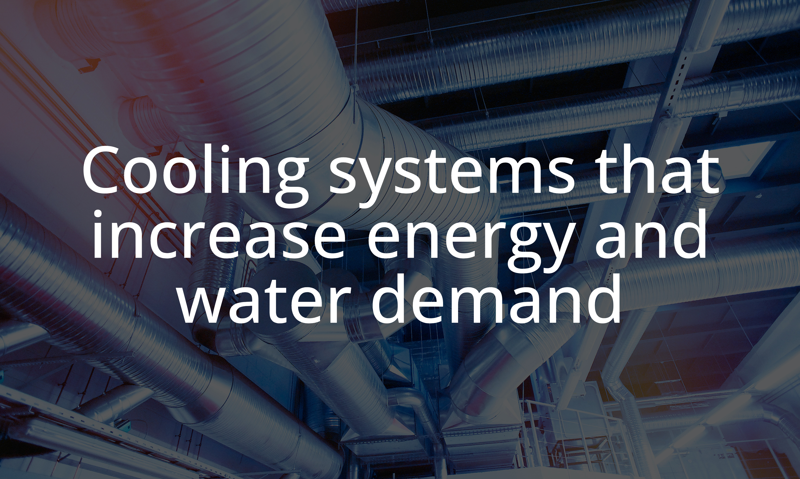
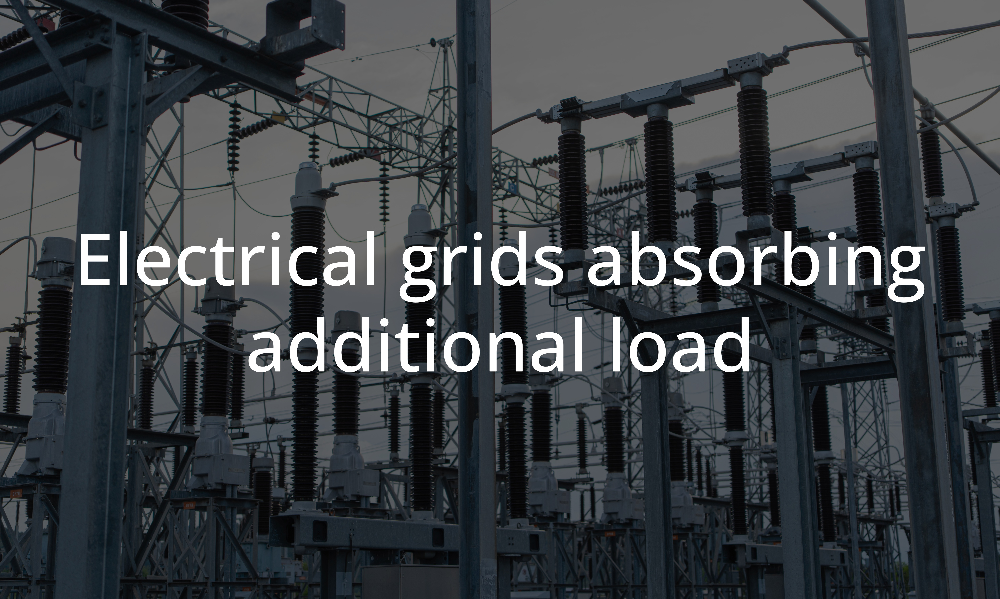
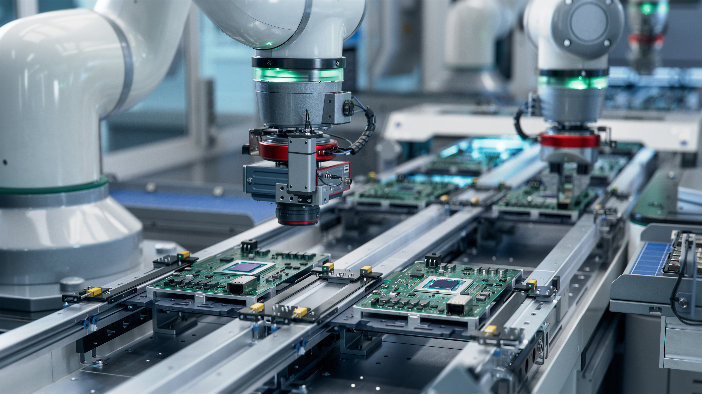

Understanding AI’s environmental impact requires examining the infrastructure that supports large-scale computation. That impact can be organized into three primary domains.


Semiconductor manufacturing, rare earth extraction, and hardware turnover.
AI adoption is accelerating, model sizes are growing, and usage is scaling globally. As infrastructure expands to support this growth, pressure increases on electricity grids, water systems, and material supply chains.
Environmental impact is shaped by design choices, energy sources, cooling strategies, and policy decisions.
This site examines those trade-offs.